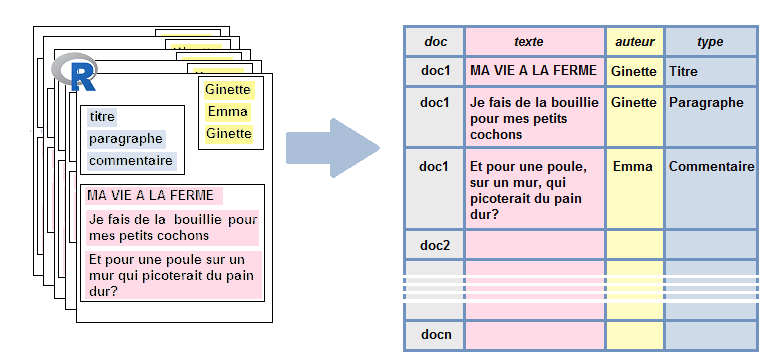

Chapitre 2 Extraction de données textuelles
2.1 Depuis des pages web: web-scraping
Principe: récupérer la donnée (notamment textuelle) présente sur des pages web.
Le plus souvent, il s’agit de récupérer des données sur une série de pages qui sont toutes organisées de la même manière (par exemple, données issues de pages de recette sur Marmiton, données issues de petites annonces sur Leboncoin, données correspondant à l’ensemble des équipes ou des joueurs sur un site sportif, etc.).

Utilisation du package rvest

Pour récolter le contenu textuel d’une page web, il faut être en mesure de:
- lire une page html dans R
- repérer l’élément d’intérêt dans la page (connaissance basique du html, SelectorGadget)
- parcourir l’arborescence de la page
- sélectionner un élément de la page
- récupérer le contenu de l’élément
2.1.1 Langage html
Le langage html est consitué de balises qui permettent de mettre en forme le contenu statique d’une page web.
Considérons ainsi cette page web, toute simple (ici encapsulée dans ce document):
Le code html correspondant à cette page est le suivant:
<html>
<style>
h1 {background-color: powderblue;}
.image {margin-left:50%;}
.comment{border-style:solid; background-color:LemonChiffon;}
.comment-author{font-style: italic;}
</style>
<h1> MA VIE A LA FERME </h1>
<div class="ingredients">
<b> INGREDIENTS</b>
<ul>
<li> >1 cochon(s) </li>
<li> >1 légume(s) </li>
</ul>
</div>
<div class="right"><div class="image"><img src='images/cochon.png'>
<p> Je fais de la bouillie pour mes petits cochons.</p>
<p> Pour un cochon, pour deux cochons, pour trois cochons, pour quatre, puis pour cinq, pour six, pour sept, pour huit, pour neuf, boeuf! </p>
<b>Commentaires</b>
</div>
</div>
<div class="comment">Et pour une poule sur un mur qui picoterait du pain dur?</div>
<div class="comment-author">Emma, 22 ans, Limoges</div>
<div class="comment">Je vois que vous êtes, telle la petite poule rousse, bien aimable. Avez-vous pu compter sur l'aide du chat et du canard pour semer vos 5 grains de blé?</div>
<div class="comment-author">Michel, 56 ans, Rennes</div>
</html>2.1.2 Lire une page html
Lire la page html dans R: on obtient
library(rvest)
html=xml2::read_html("data/blog_de_ginette.htm", encoding="UTF-8")
html## {html_document}
## <html>
## [1] <head>\n<meta http-equiv="Content-Type" content="text/html; charset=UTF-8 ...
## [2] <body>\n<h1> MA VIE A LA FERME </h1>\r\n<div class="ingredients">\r\n <b ...2.1.3 Extraire certains éléments d’une page html
Extraire certains éléments (des “nodes” ou “nodesets”):
rvest::html_nodes(html,"b")## {xml_nodeset (2)}
## [1] <b> INGREDIENTS</b>
## [2] <b>Commentaires</b>rvest::html_nodes(html,".comment-author") ## {xml_nodeset (2)}
## [1] <div class="comment-author">Emma, 22 ans, Limoges</div>
## [2] <div class="comment-author">Michel, 56 ans, Rennes</div>rvest::html_nodes(html,".ingredients") %>%
rvest::html_children()## {xml_nodeset (2)}
## [1] <b> INGREDIENTS</b>
## [2] <ul>\n<li> >1 cochon(s) </li>\r\n <li> >1 légume(s) </li>\r\n < ...2.1.3.1 Extraire le type de certains éléments

Extraire le type des nodes ou nodesets:
rvest::html_nodes(html,".image") %>%
rvest::html_name()## [1] "div"2.1.3.2 Extraire le contenu de certains éléments
Extraire le contenu des nodes ou nodesets:
rvest::html_nodes(html,"b") %>%
rvest::html_text() ## [1] " INGREDIENTS" "Commentaires"2.1.3.3 Extraire les attributs de certains éléments
Extraire les attributs des nodes ou nodesets:
rvest::html_nodes(html,"div") %>%
rvest::html_attrs()## [[1]]
## class
## "ingredients"
##
## [[2]]
## class
## "right"
##
## [[3]]
## class
## "image"
##
## [[4]]
## class
## "comment"
##
## [[5]]
## class
## "comment-author"
##
## [[6]]
## class
## "comment"
##
## [[7]]
## class
## "comment-author"2.1.4 Passage au format rectangulaire, et mise en fonction

On extrait les données et on les met sous forme de table:
page <- "data/blog_de_ginette.htm"
html <- xml2::read_html(page, encoding="UTF-8")
texte <- html %>%
rvest::html_nodes(".comment") %>%
html_text()
auteur <- html %>%
rvest::html_nodes(".comment-author") %>%
html_text()
tib_commentaires <- tibble::tibble(texte,auteur)
tib_commentaires## # A tibble: 2 × 2
## texte auteur
## <chr> <chr>
## 1 Et pour une poule sur un mur qui picoterait du pain dur? c'est bien be… Emma,…
## 2 Je vois que vous êtes, telle la petite poule rousse, bien aimable. Ave… Miche…On peut en fait écrire une fonction qui prendrait pour entrée l’url de la page considérée et nous renverrait ce même tableau en sortie:
extrait_commentaires <- function(page){
html <- xml2::read_html(page, encoding="UTF-8")
texte <- html %>%
rvest::html_nodes(".comment") %>%
html_text()
auteur <- html %>%
rvest::html_nodes(".comment-author") %>%
html_text()
tib_commentaires <- tibble::tibble(doc=rep(page,length(texte)),
texte,
auteur)
return(tib_commentaires)
}
extrait_commentaires("data/blog_de_ginette.htm")## # A tibble: 2 × 3
## doc texte auteur
## <chr> <chr> <chr>
## 1 data/blog_de_ginette.htm Et pour une poule sur un mur qui picoterait d… Emma,…
## 2 data/blog_de_ginette.htm Je vois que vous êtes, telle la petite poule … Miche…extrait_commentaires("data/blog_de_jean-marc.htm")## # A tibble: 6 × 3
## doc texte auteur
## <chr> <chr> <chr>
## 1 data/blog_de_jean-marc.htm Les thons, avec un t comme crocodile? ou le… "Eddi…
## 2 data/blog_de_jean-marc.htm Pourquoi ces thons ne préféraient-ils pas a… "Yves…
## 3 data/blog_de_jean-marc.htm Tout ça me fait penser au blog de Ginette s… "Robe…
## 4 data/blog_de_jean-marc.htm Je préfère la chanson qui parle de canards … "Edua…
## 5 data/blog_de_jean-marc.htm On ne comprend pas trop cette passion pour … "Lise…
## 6 data/blog_de_jean-marc.htm Et pendant ce temps-là, le roi des thons, a… "Nadi…2.1.5 Itération
Imaginons maintenant qu’on ne traite pas seulement du blog de Ginette, mais aussi de tout un tas d’autres pages structurées de la même façon.
Ici, on va supposer simplement qu’on a 3 pages structurées de la même manière:
On dispose maintenant de la fonction extrait_commentaires() qui prend pour entrée le nom de la page html, et renvoie en sortie un tableau relatif aux commentaires sur la page. On voudrait appliquer cette fonction, de manière itérative à l’ensemble des pages html qui nous intéressent.
Le package purrr permet d’appliquer une fonction à différents éléments d’une liste ou d’un vecteur, de manière itérative (…il est évidemment possible de réaliser la même opération à l’aide d’une boucle for…).
pages=c("data/blog_de_ginette.htm",
"data/blog_de_jean-marc.htm",
"data/blog_de_norbert.htm")
list_commentaires <- purrr::map(pages, extrait_commentaires)
list_commentaires## [[1]]
## # A tibble: 2 × 3
## doc texte auteur
## <chr> <chr> <chr>
## 1 data/blog_de_ginette.htm Et pour une poule sur un mur qui picoterait d… Emma,…
## 2 data/blog_de_ginette.htm Je vois que vous êtes, telle la petite poule … Miche…
##
## [[2]]
## # A tibble: 6 × 3
## doc texte auteur
## <chr> <chr> <chr>
## 1 data/blog_de_jean-marc.htm Les thons, avec un t comme crocodile? ou le… "Eddi…
## 2 data/blog_de_jean-marc.htm Pourquoi ces thons ne préféraient-ils pas a… "Yves…
## 3 data/blog_de_jean-marc.htm Tout ça me fait penser au blog de Ginette s… "Robe…
## 4 data/blog_de_jean-marc.htm Je préfère la chanson qui parle de canards … "Edua…
## 5 data/blog_de_jean-marc.htm On ne comprend pas trop cette passion pour … "Lise…
## 6 data/blog_de_jean-marc.htm Et pendant ce temps-là, le roi des thons, a… "Nadi…
##
## [[3]]
## # A tibble: 4 × 3
## doc texte auteur
## <chr> <chr> <chr>
## 1 data/blog_de_norbert.htm A quel moment faut-il claquer du bec, si l'on… Jonas…
## 2 data/blog_de_norbert.htm Norbert, mon petit chat, ça fait bien longtem… Julie…
## 3 data/blog_de_norbert.htm L'ambiance doit être sympa quand les poules d… Micka…
## 4 data/blog_de_norbert.htm Vous devez avoir un grain pour écrire des cho… Vivia…tibtot_commentaires <- list_commentaires %>%
dplyr::bind_rows()
tibtot_commentaires## # A tibble: 12 × 3
## doc texte auteur
## <chr> <chr> <chr>
## 1 data/blog_de_ginette.htm Et pour une poule sur un mur qui picoterai… "Emma…
## 2 data/blog_de_ginette.htm Je vois que vous êtes, telle la petite pou… "Mich…
## 3 data/blog_de_jean-marc.htm Les thons, avec un t comme crocodile? ou l… "Eddi…
## 4 data/blog_de_jean-marc.htm Pourquoi ces thons ne préféraient-ils pas … "Yves…
## 5 data/blog_de_jean-marc.htm Tout ça me fait penser au blog de Ginette … "Robe…
## 6 data/blog_de_jean-marc.htm Je préfère la chanson qui parle de canards… "Edua…
## 7 data/blog_de_jean-marc.htm On ne comprend pas trop cette passion pour… "Lise…
## 8 data/blog_de_jean-marc.htm Et pendant ce temps-là, le roi des thons, … "Nadi…
## 9 data/blog_de_norbert.htm A quel moment faut-il claquer du bec, si l… "Jona…
## 10 data/blog_de_norbert.htm Norbert, mon petit chat, ça fait bien long… "Juli…
## 11 data/blog_de_norbert.htm L'ambiance doit être sympa quand les poule… "Mick…
## 12 data/blog_de_norbert.htm Vous devez avoir un grain pour écrire des … "Vivi…2.2 Depuis des images ou des documents pdf: OCRisation
L’OCRisation (OCR pour Optical Character Recognition) consiste à appliquer des algorithmes de reconnaissance de caractères à des images afin d’en extraire du texte.
Avec R, on peut réaliser l’OCRisation à l’aide du package tesseract, documenté à cette adresse. Ce package repose lui-même sur (je vous le donne en mille) le logiciel Tesseract.
library(tesseract)Outre l’installation “classique” du package R, donc (via install.packages("tesseract") il peut être nécessaire de procéder “à la main” à des installations supplémentaires sur votre machine (ce sera notamment le cas si vous travaillez sous Debian/Ubuntu). Dans ce cas, je vous invite à suivre les indications sur cette page.
En outre, pour une reconnaissance optimale des caractères, il est préférable de disposer d’un moteur d’OCR qui corresponde à la langue du texte que l’on cherche à reconnaître. Pour des langues autres que l’anglais (“eng”), il faudra donc compléter le package tesseract en téléchargeant le moteur adéquat. Il n’est nécessaire de réaliser ce téléchargement qu’une seule fois.
Pour les utilisateurs de Windows/MacOS, il suffira vraisembablement de faire (ici pour le français):
tesseract_download("fra")Pour les utilisateurs de Debian/Ubuntu, il peut être nécessaire au préalable pour procéder à ce téléchargement de renseigner (une seule fois!) une variable d’environnement globale TESSDATA_PREFIX en procédant comme suit:
- Ouvrir le fichier .Renviron
usethis::edit_r_environ()- y renseigner le chemin vers le dossier tessdata. Chez moi, il s’agit du chemin “/usr/share/tesseract-ocr/4.00/tessdata/”, donc:
TESSDATA_PREFIX="/usr/share/tesseract-ocr/4.00/tessdata/"Puis:
tesseract_download("fra",datapath="/usr/share/tesseract-ocr/4.00/tessdata/")2.2.1 Utilisation du package tesseract
Considérons par exemple l’image suivante (scannée depuis un numéro Hors-Série de Géo sur les chats du monde…):

Réalisons maintenant l’OCRisation à l’aide de la fonction ocr():
texte_brut <- tesseract::ocr("images/chats_de_Paris.png",
engine = tesseract::tesseract("fra"))
texte_brut## [1] "aris n’est pas à proprement par-\n\nler une ville à chats, comme\n\nRome ou Istanbul. Et pourtant,\n\nsi on y regarde de près, les ma-\n\ntous sont partout. Non pas dans\n\nla rue ou aux abords des monu-\n\nments anciens, même si on en\n\nvoit quelques-uns se balader au\n\nmilieu des pierres tombales sé-\n\nculaires du cimetière du Mont-\n\nparnasse ou du Père-Lachaise. Les chats du Paris\nd’aujourd’hui vivent surtout dans les cafés, les res-\ntaurants, les librairies, chez les fleuristes, les lu-\nthiers, les épiciers et dans les boutiques, régnant\nsur leur petit monde du haut d’un comptoir en zinc,\nalanguis sur une table recouverte de beaux livres\nou s’étirant nonchalamment sur le sol de marbre\nd’un grand hôtel chic. Quand Mickey, le chat atti-\ntré du célèbre café Le Select, dans le quartier de\nMontparnasse, est mort en août dernier à l’âge res-\npectable de 22 ans, tout le quartier s’est senti en\ndeuil. Accoudés au bar, les habitués désemparés\nse remémoraient des anecdotes à son sujet. L’his-\ntoire de ce chat tigré est à la fois unique et repré-\nsentative de la vie d’un félin à Paris. Le premier\nnom de Mickey était Oscar. Dans sa jeunesse,\nil vivait au café L'Atelier, juste à côté. Pour d’obs-\ncures raisons, il migra au Select, où «l’on ne\ns’y connaissait pas trop en chats». explique Fré-\n"On obtient d’ores-et-déjà un résultat intéressant, malgré quelques petites choses à nettoyer (notamment les retours à la ligne et tirets associés). Pour réaliser ce nettoyage, on peut utiliser les fonctions du package stringr et les expressions régulières qui font l’objet du chapitre 3
library(dplyr)
txt=texte_brut %>%
stringr::str_replace_all("-\\n+","") %>% #tirets suivis de retours à la ligne simples ou multiples
stringr::str_replace_all("\\n+"," ") #retours à la ligne simples ou multiples
txt## [1] "aris n’est pas à proprement parler une ville à chats, comme Rome ou Istanbul. Et pourtant, si on y regarde de près, les matous sont partout. Non pas dans la rue ou aux abords des monuments anciens, même si on en voit quelques-uns se balader au milieu des pierres tombales séculaires du cimetière du Montparnasse ou du Père-Lachaise. Les chats du Paris d’aujourd’hui vivent surtout dans les cafés, les restaurants, les librairies, chez les fleuristes, les luthiers, les épiciers et dans les boutiques, régnant sur leur petit monde du haut d’un comptoir en zinc, alanguis sur une table recouverte de beaux livres ou s’étirant nonchalamment sur le sol de marbre d’un grand hôtel chic. Quand Mickey, le chat attitré du célèbre café Le Select, dans le quartier de Montparnasse, est mort en août dernier à l’âge respectable de 22 ans, tout le quartier s’est senti en deuil. Accoudés au bar, les habitués désemparés se remémoraient des anecdotes à son sujet. L’histoire de ce chat tigré est à la fois unique et représentative de la vie d’un félin à Paris. Le premier nom de Mickey était Oscar. Dans sa jeunesse, il vivait au café L'Atelier, juste à côté. Pour d’obscures raisons, il migra au Select, où «l’on ne s’y connaissait pas trop en chats». explique Fré"Juste pour voir l’ensemble du texte sans avoir à scroller horizontalement:
tibtxt=tibble(txt=txt)
knitr::kable(tibtxt)| txt |
|---|
| aris n’est pas à proprement parler une ville à chats, comme Rome ou Istanbul. Et pourtant, si on y regarde de près, les matous sont partout. Non pas dans la rue ou aux abords des monuments anciens, même si on en voit quelques-uns se balader au milieu des pierres tombales séculaires du cimetière du Montparnasse ou du Père-Lachaise. Les chats du Paris d’aujourd’hui vivent surtout dans les cafés, les restaurants, les librairies, chez les fleuristes, les luthiers, les épiciers et dans les boutiques, régnant sur leur petit monde du haut d’un comptoir en zinc, alanguis sur une table recouverte de beaux livres ou s’étirant nonchalamment sur le sol de marbre d’un grand hôtel chic. Quand Mickey, le chat attitré du célèbre café Le Select, dans le quartier de Montparnasse, est mort en août dernier à l’âge respectable de 22 ans, tout le quartier s’est senti en deuil. Accoudés au bar, les habitués désemparés se remémoraient des anecdotes à son sujet. L’histoire de ce chat tigré est à la fois unique et représentative de la vie d’un félin à Paris. Le premier nom de Mickey était Oscar. Dans sa jeunesse, il vivait au café L’Atelier, juste à côté. Pour d’obscures raisons, il migra au Select, où «l’on ne s’y connaissait pas trop en chats». explique Fré |
2.2.2 Et pour OCRiser depuis un pdf??
Si vous souhaitez OCRiser depuis un pdf, vous pouvez suivre peu ou prou la démarche expliqué ci-dessus, mais en commençant par convertir votre pdf en image via le package pdftools:
pngfile <- pdftools::pdf_convert('images/geo_chats.pdf',
filenames=c("docs/geo_chats.png"),
dpi = 600)## Warning in sprintf(filenames, pages, format): 2 arguments sont inutilisés par le
## format 'docs/geo_chats.png'## Converting page 1 to docs/geo_chats.png... done!print(pngfile)## [1] "docs/geo_chats.png"La ligne de commande ci-dessus a ainsi créé une image “geo_chats_1.png”, enregistrée localement sur le PC dans le répertoire de travail, à partir du pdf.
2.3 Depuis des enregistrements audio: transcription
Il est également possible d’extraire automatiquement du texte depuis un enregistrement audio. On parle dans ce cas de transcription automatique.
Nous allons utiliser deux APIs différentes pour réaliser la transcription:
- l’API Watson Speech-to-text d’IBM
- l’API Cloud Speech-to-text de Google
L’API d’IBM permet de transcrire gratuitement jusqu’à 500 minutes d’audio par mois (environ 2 centimes par minute transcrite au-delà). Il est assez facile de commencer à l’utiliser (enregistrement et authentification simple). En revanche, son paramètrage n’est pas très facile et les résultats semblent moins encourageants que ceux obtenus par l’algorithme Google.
L’API de Google permet de transcrire gratuitement jusqu’à 60 minutes d’audio par mois (environ 2 centimes par minute transcrite au-delà). La “mise en place” est un peu plus complexe qu’avec l’API d’IBM (je décris la procédure plus bas). Par contre, il existe un package R (googleLanguageR) qui facilite son utilisation et le paramétrage ultérieur des requêtes. Les résultats de l’algorithme sont (pour ce que j’en ai vu) meilleurs que ceux de l’algorithme d’IBM.
Pour résumer:
| API | Gratuité | Mise en place | Paramétrage et envoi des requêtes | Résultat |
|---|---|---|---|---|
| IBM | 😄 | 😄 | ||
| 😄 | 😄 |
2.3.1 Présentation de l’exemple
Je vais faire tourner les APIs sur un enregistrement (à deux voix!) de la fable Le Corbeau et le Renard. L’enregistrement est disponible ici.
audiopath="data/corbeau_et_renard.wav"## # A tibble: 1 × 3
## path sampling_rate duration
## <chr> <int> <dbl>
## 1 data/corbeau_et_renard.wav 48000 45.32.3.2 Prétraitements éventuels
Il peut être nécessaire de réaliser quelques prétraitements sur les enregistrements audio avant de les soumettre au traitement des APIs.
On peut réaliser ces traitements à l’aide des packages R tuneR et seewave.
Pour utiliser l’API Google par exemple, il est nécessaire de passer en “Mono” si l’enregistrement original est en “Stereo”.
La fonction seewave::cutw() permet par ailleurs de découper l’enregistrement audio initial en séquences plus courtes si nécessaire (par exemple pour tester les résultats renvoyés par l’API).
library(tuneR)
wave_initial=tuneR::readWave(audiopath)
wave_short=seewave::cutw(wave_initial,
from=0,
to=15,
output="Wave")
wavmono=tuneR::mono(wave_short,
which=c("left","right","both"))
tuneR::writeWave(wavmono,
"data/corbeau_et_renard_mono.wav")
tuneR::writeWave(wavmono, "data/corbeau_et_renard.csv",extensible=FALSE)2.3.3 API Speech-to-text Google: package googleLanguageR
2.3.3.1 Enregistrement, mise en place
Pour utiliser ce service il faut disposer d’un compte google et avoir fourni un numéro de carte bleue. Le recours à l’API Speech-to-text de Google est gratuit à hauteur de 60 minutes de transcription par mois. Au delà, le service coûte environ 2 centimes par minute transcrite.
Pour récupérer le fichier d’identification nécessaire à l’utilisation de l’API, il faut
avoir un compte Google
se rendre sur l’interface Google Cloud Platform,
associer un compte de facturation à votre compte Google (si ce n’est pas déjà fait) et notamment avoir une CB associée.
créer un projet Google Cloud
activer l’API qui vous intéresse pour ce projet (parmi les nombreuses que compte Google): ici Cloud Speech-to-Text
créer un compte de service et récupérer le fichier JSON contenant la clé privée pour le compte de service. Il faut pour cela aller (toujours sur l’interface Google Cloud Platform) dans le menu IAM et admin => Comptes de Service. Sélectionner le compte de service concerné, et dans les Actions (3 petits points à droite du tableau) sélectionner Créer une clé => JSON).
Enregistrer ce fichier JSON (de préférence à la racine de votre ordinateur), et enregistrer ce chemin comme variable d’environnement R
GL_AUTH. Pour cela il fautOuvrir le fichier .Renviron
usethis::edit_r_environ()- y renseigner le chemin vers le fichier JSON. Chez moi, il s’agit du chemin “/home/lvaudor/google_service_authentication.json”“, donc:
GL_AUTH="/home/lvaudor/google_service_authentication.json"Dès que GL_AUTH est définie correctement (et le fichier .json au bon endroit!), on peut charger le package googleLanguageR que nous allons utiliser pour envoyer des requêtes à l’API Cloud Speech-to-text de Google. L’authentification se fait automatiquement au chargement du package:
library(googleLanguageR)2.3.3.2 Envoi des requêtes à l’API
On peut configurer les options de l’API en prévision l’envoi de la requête en lui passant une liste de paramètres, par exemple:
my_config <- list(diarizationConfig=list(enableSpeakerDiarization=TRUE),
enableWordConfidence=TRUE,
enableAutomaticPunctuation = TRUE)Ci-dessus, je précise que je veux que
- l’algorithme tente de reconnaître plusieurs locuteurs,
- que chaque mot soit assorti d’un estimateur de confiance,
- qu’il y ait reconnaissance automatique de la ponctuation.
cr=tuneR::readMP3("docs/audio_samples/corbeau_et_renard.mp3")
tuneR::writeWave(cr,"docs/audio_samples/corbeau_et_renard.wav", extensible=FALSE)Passons maintenant la requête elle-même.
2.3.3.2.1 Enregistrement court
Pour un enregistrement relativement court (<1 min, ce qui est le cas ici), on peut procéder de la manière suivante:
result_gl=gl_speech("data/corbeau_et_renard.wav",
languageCode="fr-FR",
sampleRateHertz=48000,
customConfig=my_config)resultat=result_gl$timings[[2]]
resultatOn peut mettre en forme les résultats pour obtenir la transcription suivante (elle prend ici en compte les changements de locuteur:)
transcript_Google=
resultat %>%
mutate(speakerChange=abs(speakerTag-lag(speakerTag,1, default=1))) %>%
mutate(speakerTurn=cumsum(speakerChange)) %>%
group_by(speakerTurn) %>%
summarise(word=paste0(word,collapse=" ")) %>%
ungroup()knitr::kable(transcript_Google)2.3.3.2.2 Enregistrement long
Pour un enregistrement d’une durée supérieure à 1 minute, il est nécessaire de procéder d’une manière légèrement différente.
Il est nécessaire d’uploader le fichier dans un Google Storage Bucket (en faisant bien attention que le compte de service qui détient l’accès à l’API Speech-to-text soit défini comme propriétaire du bucket en question) puis de préciser dans la requête (parmi les paramètres de la fonction gl_speech()) l’option asynch=TRUE.
result_gl_asynch=gl_speech("gs://lise_audio_samples/corbeau_et_renard.wav",
languageCode="fr-FR",
sampleRateHertz=48000,
asynch=TRUE,
customConfig=my_config)
gl_speech_op(result_gl_asynch)2.3.4 API Watson Speech-to-text d’IBM
2.3.4.1 Enregistrement, mise en place
Ci-après je vous montre comment réaliser la transcription à partir d’une API, Speech-to-Text Watson d’IBM. La documentation relative à cette API compte entre autre:
- un document renseignant notamment les paramètres de cette API ici
- un tutoriel pour commencer ici
- un guide avec des requêtes dans différents langages ici
Pour être en mesure de s’authentifier la démarche est relativement simple. Il faut
- se créer un compte IBM (fournir son adresse mail)
- une fois enregistré, activer l’API Speech-to-text
- Sur le site d’IBM, aller dans Gérer => ID de service %>% Créer, et copier la clé d’API ainsi créée.
La clé d’API ressemble à quelque chose de ce genre:
"AosL3344P0xzxIhVm2Lj6rJkIB54-672Gc4PsORRtcQQF"(cette clé est une fausse clé, ne cherchez pas à la réutiliser ;-) )
Pour pouvoir utiliser cette clé facilement sans la révéler à vos collaborateurs, je conseille de l’enregistrer en tant que variable d’environnement dans R. Pour ce faire, il suffit d’
- ouvrir le fichier .Renviron
usethis::edit_r_environ()- et y renseigner l’objet “APIKEY_IBM”:
APIKEY_IBM="AosL3344P0xzxIhVm2Lj6rJkIB54-672Gc4PsORRtcQQF"2.3.4.2 Modèles linguistiques
Pour envoyer des requêtes à l’API nous aurons besoin des packages httr et curl.
library(dplyr)Voici les modèles linguistiques disponibles:
tib_models2.3.4.3 Envoi des requêtes
J’ai écrit ci-dessous une fonction IBM_query() qui permet de simplifier l’envoi de requêtes à l’API IBM depuis R.
(Cette fonction ne fait pas appel aux packages httr et curl car j’ai pour l’instant des difficultés à paramétrer mes requêtes de cette manière!!)
IBM_query=function(audio_path,
language_model="fr-FR_BroadbandModel",
keywords=NA){
audio_path_complete=paste0(getwd(),"/",audio_path)
output_path="output_IBM_speechtotext.json"
query=paste0('curl -X POST -u "apikey:wk7XCWYBKloXIaxWRVq8GdFh_hJL1cdLPONR-IRLaYwJ" ',
'--output "',
output_path,
'" --header "Content-Type: application/octet-stream" ',
'--data-binary @',
audio_path_complete," ",
'"https://api.eu-gb.speech-to-text.watson.cloud.ibm.com/v1/recognize',
'?model=',
language_model,
"&word_alternatives_threshold=0.5")
if(!is.na(keywords)){
query=paste0(query,
"&keywords=",
paste0(keywords, collapse="%2C"),
"&keywords_threshold=0.5"
)
}
query=paste0(query,
'"')
system(query)
result=jsonlite::read_json(output_path)
unlink(output_path)
return(result)
}Cette fonction a deux arguments principaux:
- Le chemin vers l’enregistrement audio (
audio_path) - le modèle retenu (
language_model, ici “fr-FR-BroadbandModel”)
Je fais tourner cette fonction sur l’enregistrement “corbeau_et_renard.wav”.
result_IBM=IBM_query(audio_path="data/corbeau_et_renard.wav",
language_model="fr-FR_BroadbandModel")Il faut mettre un peu en forme le résultat pour obtenir la transcription:
transcript_IBM=result_IBM$results %>%
purrr::map("alternatives") %>%
purrr::map(1) %>%
purrr::map("transcript") %>%
paste0(collapse=". ")Juste pour voir l’ensemble du texte sans avoir à scroller horizontalement:
tibtxt=tibble(txt=transcript_IBM)
knitr::kable(tibtxt)